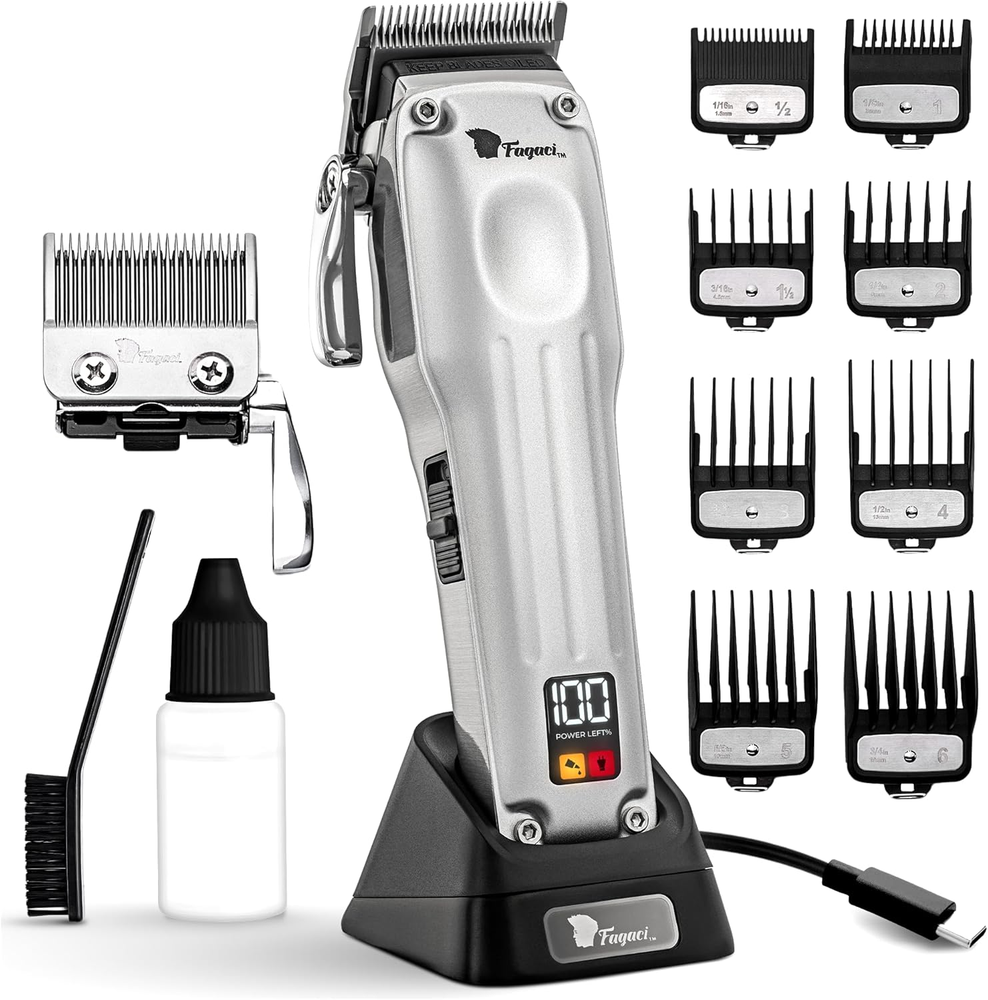

Escolha por categoria
Para barbeiros
Seleção focada em ritmo de trabalho, manutenção simples e escolhas que ajudam o posto a funcionar melhor todos os dias. Começa pelas escolhas mais fortes e usa os guias da revista para resolver a dúvida que ainda falte.
Wahl Super Taper
Indicada para barbeiros e para quem corta cabelo com regularidade e precisa de uma máquina estável ao longo do dia.
Ver produto
Spray Beardburys 5 em 1
Indicado para barbeiros e para quem usa máquina de cortar com regularidade e quer manter o equipamento limpo e lubrificado.
Ver produtoComprar para trabalhar é outra conversa
Os guias desta categoria ajudam a separar o que aguenta uso regular do que faz mais sentido em casa, além de mostrar onde vale a pena investir primeiro.
Melhores opções
Compras que fazem diferença no posto
Aqui interessa estabilidade, rapidez de acesso e manutenção sem falhas. O critério é trabalho real, não vitrine.
Spray Beardburys 5 em 1
Cinco funções num só spray para manutenção entre serviços

Organizador de Bancada Colcolo
Organiza máquinas, aparadores e utensílios num só lugar


Como escolher
Como escolher com o posto em mente
Para trabalho diário, cada compra deve resolver ritmo, consistência ou organização. Se não fizer isso, provavelmente pode esperar.
- A ferramenta base de corte pesa mais do que qualquer acessório secundário.
- Manutenção simples evita paragens e prolonga o que já tens.
- Organização de bancada e higiene visível contam para o serviço e para a perceção do cliente.
Atalho de escolha
Escolhe pelo impacto no dia a dia
Há uma base de corte, um essencial de manutenção e um apoio claro para a bancada.
Base sólida de corteVer produto
Wahl Super Taper
Indicada para barbeiros e para quem corta cabelo com regularidade e precisa de uma máquina estável ao longo do dia.
Manutenção entre serviçosVer produto
Spray Beardburys 5 em 1
Indicado para barbeiros e para quem usa máquina de cortar com regularidade e quer manter o equipamento limpo e lubrificado.
Bancada mais arrumadaVer produto
Organizador de Bancada Colcolo
Indicado para barbeiros que trabalham com várias ferramentas e querem uma bancada mais arrumada.
Revista OndeCortar
Ver mais guiasGuias úteis para decidir o que entra primeiro no posto
Estes artigos ajudam a priorizar compras com impacto real no trabalho, na manutenção e na organização do espaço.
Perguntas frequentes
O que costuma ter impacto mais rápido no posto?
Uma base de corte fiável, manutenção feita a tempo e bancada organizada costumam mudar o dia a dia mais depressa.
Vale a pena investir cedo em acessórios?
Vale quando resolvem acesso, higiene, conforto ou visibilidade. Se forem só decorativos, podem esperar.
Explorar categoria
No posto, prioridade é continuidade
Se a compra melhora o ritmo, reduz falhas ou organiza o serviço, faz sentido. Se não, talvez ainda não seja a próxima.
Transparência: Alguns links da loja são afiliados. Se comprares através deles, o OndeCortar.pt pode receber uma comissão por compras elegíveis.